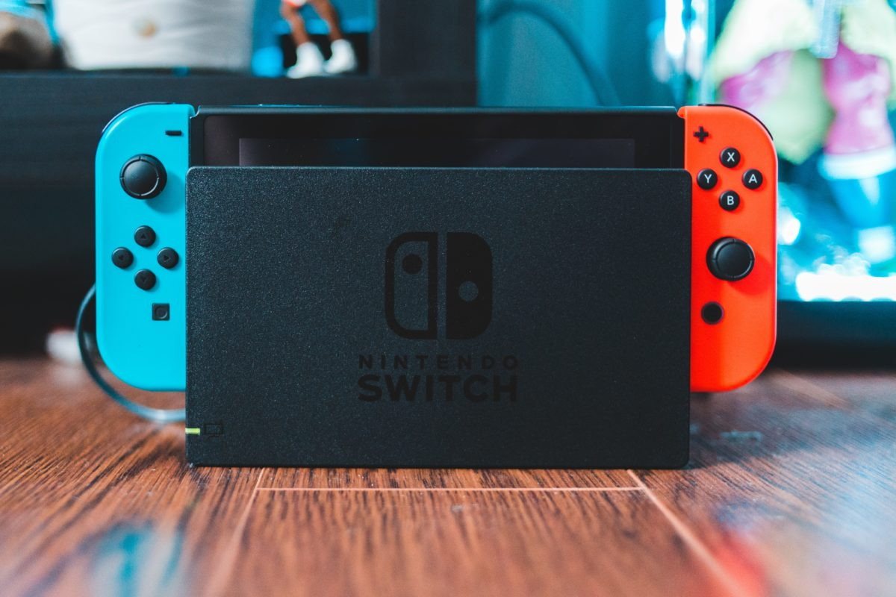

主機遊戲市場：任天堂
任天堂成立於 1889 年，是遊戲主機市場長期以來的領跑者。
回顧過去，任天堂在 1970 年代後期投入電子遊戲 產業 ， 1980 年推出掌上遊戲機「Game & Watch」，全球售出四千多萬台，獲利一次還清過去的借款，任天堂自此開始壯大，同時拓展機台市場，機台遊戲《大金剛》也成為當時最火紅的機台遊戲。
1983 年推出家用遊戲機「紅白機」， 1985 年推出遊戲《超級瑪利歐兄弟》，這款主機與遊戲風靡全球，奠定了任天堂在遊戲市場的地位，公司也於這期間上市。
1990 年代，紅白機系列也持續推出新款，超級任天堂、任天堂 64 ，另外也繼 Game & Watch 後，推出掌上型主機 Game boy，至今仍史上是銷量第二的掌上型遊戲機，第一則是NDS。 2000 年後，先是推出掌上型機台 NDS，再推出 Wii，這兩台主機在當時都賣瘋了，幾乎家家戶戶都有一台 Wii，截至停產日 NDS 和 Wii 的銷售量分別為 1.5 億和 1 億，另外，Wii 的銷量超過同期 PS3 和 Xbox 360 的銷量，是主機市場的霸主。
在 2017 年推出Switch，其兼具便利性與遊戲品質，超越 Wii 成為任天堂史上銷量最佳的主機，並在未來有望打破 PS2 的銷售紀錄，成為史上最暢銷遊戲主機。
根據 TrendForce 研究顯示最新 2021 年的銷售量統計，其中，Switch 以 2,619 萬維持領先位置，緊追其後的為 PS5 的 1,431 萬台、Xbox Series X|S 的 814 萬台。可見任天堂至今仍持續稱霸主機遊戲市場。